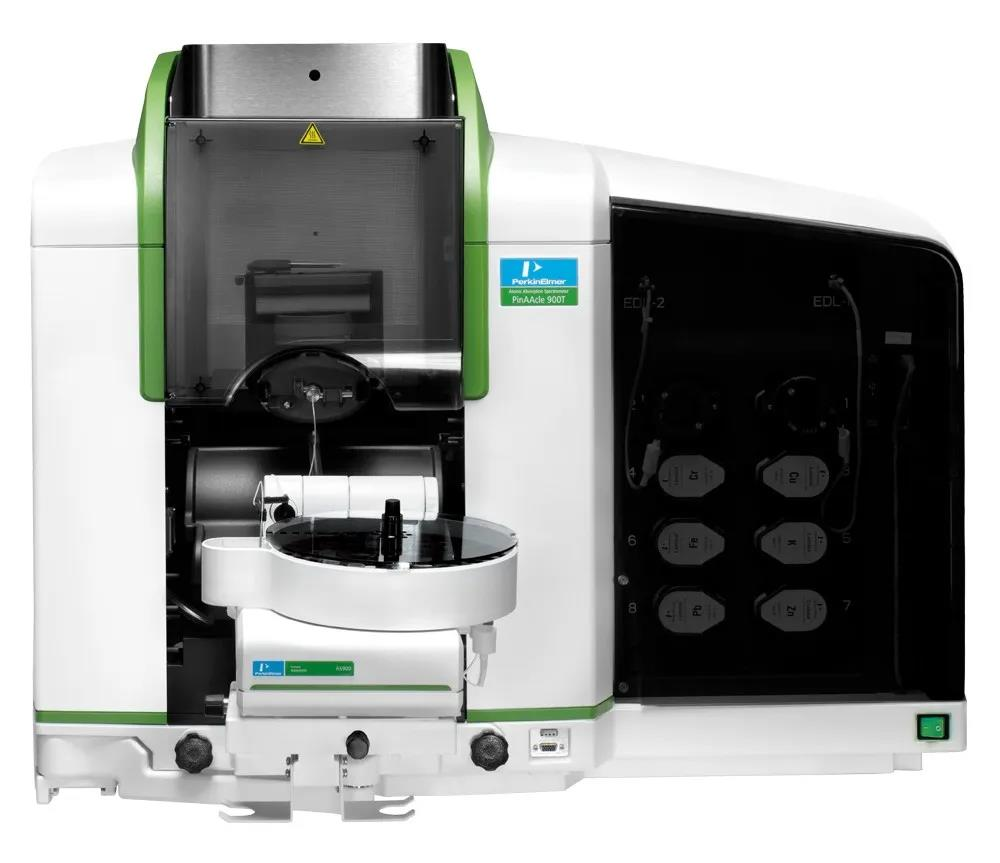

Atomic Absorption Spectroscopy (ID: 1)
原子吸收光谱仪
- Location: ES429B
- Brand/Model: PerkinElmer-PinAAcle 900T
- Identity: 1
- PI: Xiao Zhou
- Quantity: 1
- Category: Major
Mainly used for the analysis of metal elements. It use hollow cathode lamp to emit light with characteristic spectrums of the element being tested. The light will be absorbed by the ground state atom of the element when it go through the sample steam. Element content will be determined by measuring the absorbance of the specific wavelength.
主要用于金属元素的分析。使用空心阴极灯辐射出具有待测元素特征谱线的光，通过样品蒸汽时被蒸汽中待测元素基态原子所吸收，有辐射特征谱线光被减弱的成度来测定样品中待测元素的含量。